俗话说：“百里不同风，千里不同俗，万里不同食。”世界各国不同的自然地理环境、气候条件、资源特产、风土人情以及独特的历史发展经历造就了迥异的世界各国饮食文化，展现了不同的食风食俗。
本应用让您在享受美食的同时，将与美食相关的信息记录下来。往后在回味美味的同时，了解蕴藏在其背后的文化。感悟在美食中体现的世界各国不同的自然地理环境、气候条件、资源特产、风土人情以及独特的历史发展经历。让您在记录中徜佯于世界美食的历史长河，禁不住口舌生津、垂涎三尺。
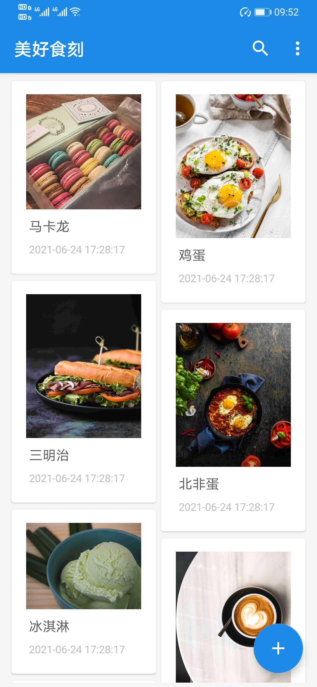
Github：Final

build.gradle：
将Final文件夹下的build.gradle中com.android.tools.build:gradle:后面的gradle版本调整为自己电脑中Android Studio的gradle版本。
dependencies {
classpath 'com.android.tools.build:gradle:X.X.X'
// NOTE: Do not place your application dependencies here
}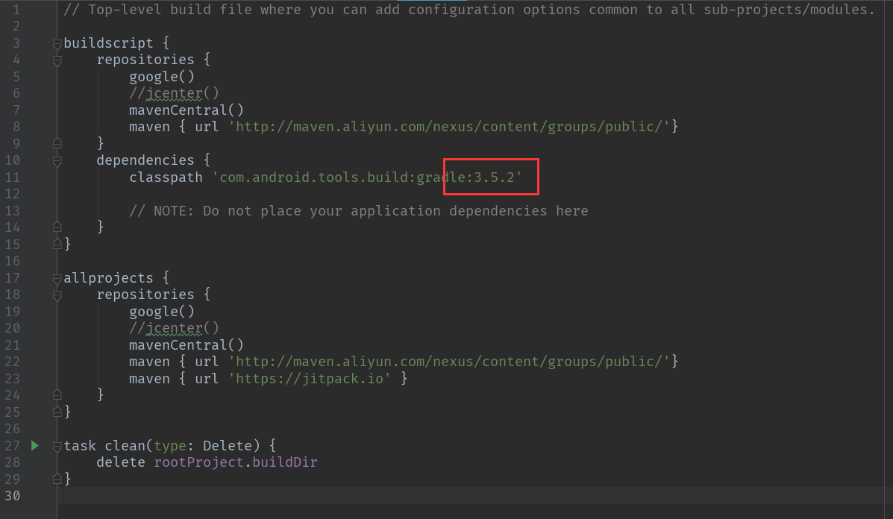
gradle-wrapper.properties：
将Final/gradle/wrapper文件夹下的gradle-wrapper.properties中distributionUrl的内容修改为本机gradle的版本号。
distributionUrl=https\://services.gradle.org/distributions/gradle-X.X.X-all.zip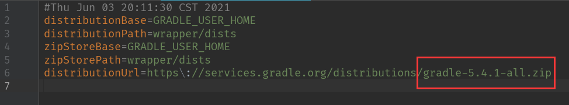
本项目引入了第三方图片选择器Matisse。
implementation 'com.zhihu.android:matisse:0.5.3-beta3'此模块可以使用源码的默认配置，也可以自行修改。如：选择图片的类型、选择图片的最大数量等等。
private void callGallery(){
Matisse.from(this)
.choose(MimeType.of(MimeType.JPEG, MimeType.PNG, MimeType.GIF))
.countable(true)
.maxSelectable(3)
.gridExpectedSize(getResources().getDimensionPixelSize(R.dimen.grid_expected_size))
.restrictOrientation(ActivityInfo.SCREEN_ORIENTATION_UNSPECIFIED)
.thumbnailScale(0.85f)
.theme(R.style.Matisse_Zhihu)
.imageEngine(new MyGlideEngine())
.capture(true)
.captureStrategy(new CaptureStrategy(true,"com.nankailiuxin.matisse.fileprovider"))
.forResult(REQUEST_CODE_CHOOSE);
}SQLite：
SQLite 是一个软件库，实现了自给自足的、无服务器的、零配置的、事务性的 SQL 数据库引擎。SQLite 是在世界上最广泛部署的 SQL 数据库引擎，并且源代码不受版权限制。
本项目中的SQLite已经部署完毕，直接运行源码即可使用，无需进行修改。
CloudBase：
本项目中使用云开发的“静态网站托管”来在云端保存图片。搭建步骤如下：
- 使用者注册云开发（CloudBase）
- 开通“静态网站托管”
- 新建文件夹“photos”
- 在“photos”文件夹下上传图片
- 打开Final\app\src\main\java\com\nankailiuxin\xapp\ui文件夹下的MainActivity.java
- 将第40行的URL修改为自己的默认域名
- 将refreshNoteList方法中的图片地址修改为自己的即可（"/photos/图片的名字\" />"）

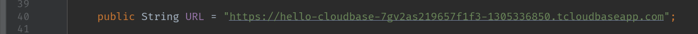
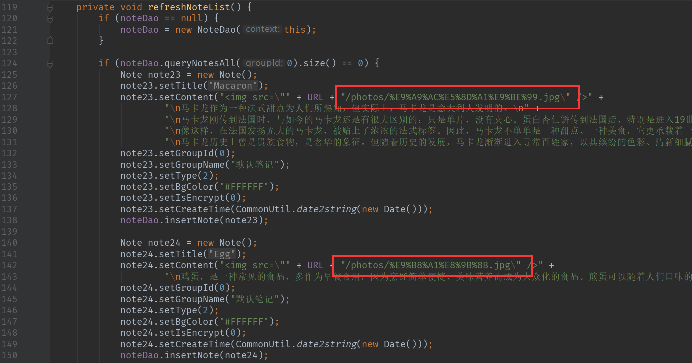
主页展示
主页使用瀑布流的形式展示各个美食卡片，用户能够在此页面开始搜索美食、新增美食、删除美食、查看美食详情。
用户可以在此页面通过使用各种交互按钮，实现自己期望的功能或者进入到其他的页面。在欢迎页面展示3秒之后，应用会跳转到主页面。此外，本应用提供了预设的美食卡片供用户欣赏与参考。
使用关键字来查询相关的美食内容
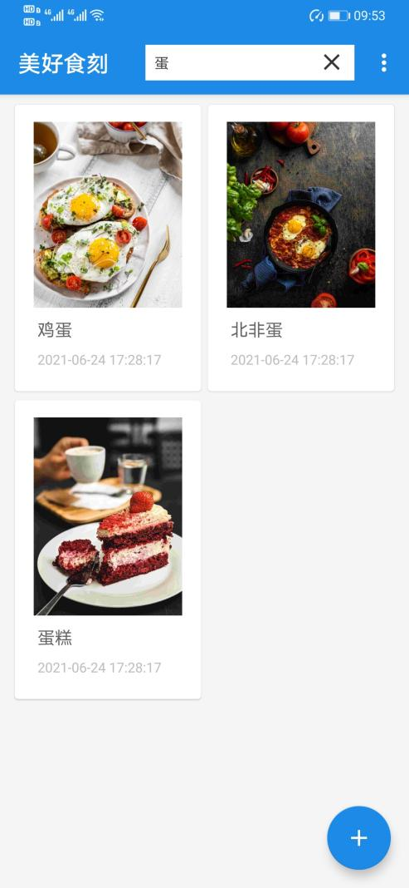
新增美食
用户在主页点击右下角的“+”按钮，进入新增美食页面。新增页面采用记事本格式展示新增美食的相关信息，用户能够在此页面添加美食标题、添加美食内容、插入美食图片、保存美食内容。
中英适配

图片选择器
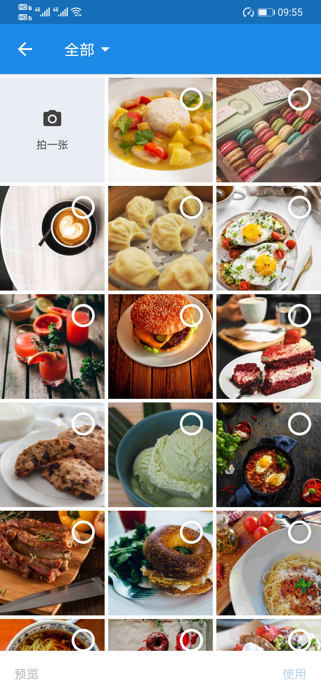
美食详情
用户在主页点击对应的美食卡片，进入查看详情页面。详情页面采用记事本格式展示美食的相关信息，用户能够在此页面查看美食大图、插入美食图片、删除美食图片、编辑美食文字、分享美食信息。
编辑美食
分享美食
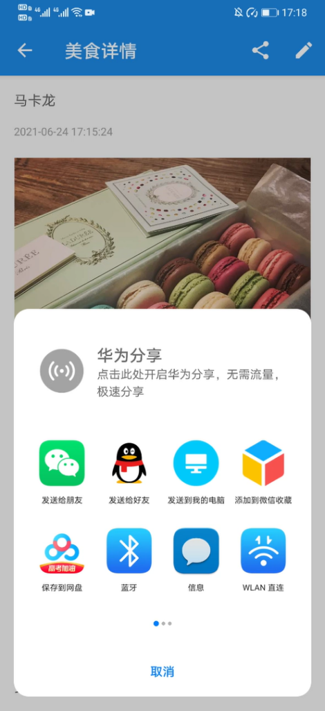
多图插入
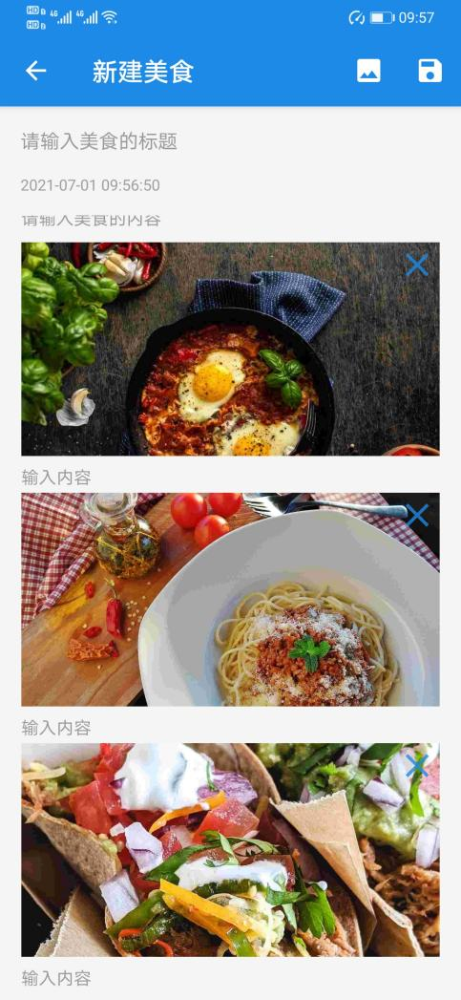
删除图片
适配横屏
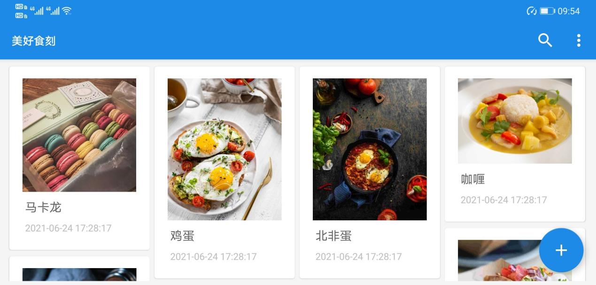
打开Final\app\src\main\java\com\nankailiuxin\xapp\ui文件夹下的MainActivity.java之后，找到refreshNoteList方法，模仿创建Note对象的方法与设定，即可新建一个美食卡片。
其中：
- note.setTitle：设定美食的标题
- note.setContent：设定美食的内容（文字与图片）
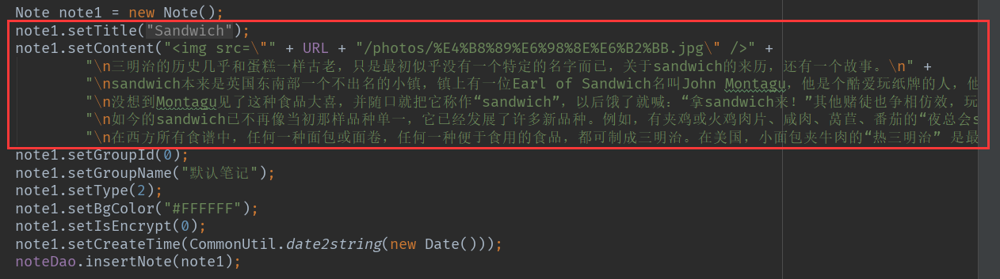
Note note = new Note();
note.setTitle("标题");
note.setContent("内容");
note.setGroupId(0);
note.setGroupName("默认笔记");
note.setType(2);
note.setBgColor("#FFFFFF");
note.setIsEncrypt(0);
note.setCreateTime(CommonUtil.date2string(new Date()));
noteDao.insertNote(note);- 姓名：柳鑫
- 学号：1813012
- 邮箱：863320295@qq.com